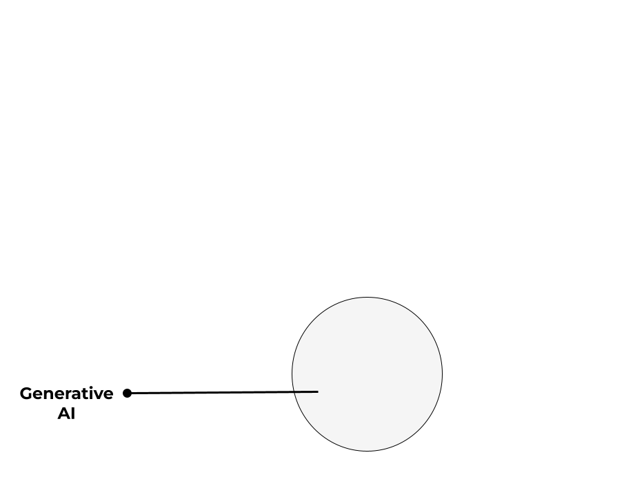
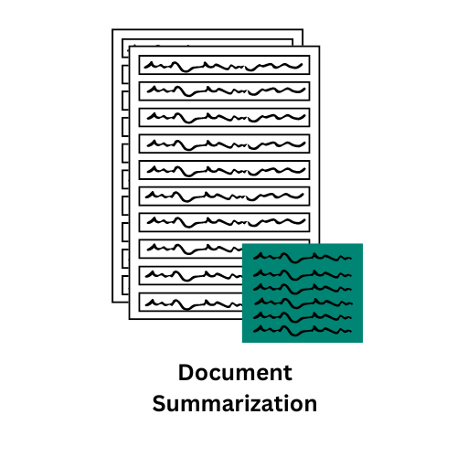

Enhancing Qualitative Analysis and Addressing Data Imbalances

Are
pre-trainedand thenfine-tunedfor purposes to solve common language problems (Wei et al, 2022b).

Prompt Engineering is the skillful combination of art and science used to craft prompts that effectively draw specific responses from AI models (Augusto, 2023).
Qualitative
Quantitative
METHODOLOGY:
*Prompt Techniques used*
*Participants*
*Experiments Conducted*
FINDINGS:
LLMs not only matched but in some instances exceeded the performance of human coders, particularly in terms of accuracy and efficiency.
METHODOLOGY:
*Prompt Techniques used*
*Context*
*Experiments Conducted*
FINDINGS:
LLMS limitations:
Hallucinations (Wu et al., 2022)
Inconsistency (Hase et al., 2021)
Domain-Specific Needs
Educational Outcomes
Ethical and Privacy Considerations
Broad Implications of LLMs in Education:
Thank you to my Advisor and Chair, Shiyan Jiang. Additionally, thank you to Noboru Matsuda’s lab in Computer Science department, especially Machi Simmei for collaborating with me.
This material is based upon work supported by the National Science Foundation under Grant No. DRL-1949110. Any opinions, findings, conclusions, or recommendations expressed in this material are those of the author(s) and do not necessarily reflect the views of the National Science Foundation.
Augusto C., P. (2023, April 20). The importance of prompt engineering in natural language systems. LinkedIn. https://www.linkedin.com/pulse/importance-prompt-engineering-natural-language-c-cardoso-r-/
Hase, P., Diab, M., Celikyilmaz, A., Li, X., Kozareva, Z., Stoyanov, V., … & Iyer, S. (2021). Do language models have beliefs? methods for detecting, updating, and visualizing model beliefs. arXiv preprint arXiv:2111.13654.
Wei, J., Wang, X., Schuurmans, D., Bosma, M., Xia, F., Chi, E., … & Zhou, D. (2022a). Chain-of-thought prompting elicits reasoning in large language models. Advances in neural information processing systems, 35, 24824-24837.
Wei, J., Tay, Y., Bommasani, R., Raffel, C., Zoph, B., Borgeaud, S., … & Fedus, W. (2022b). Emergent abilities of large language models. arXiv preprint arXiv:2206.07682.
Wu, T., Terry, M., & Cai, C. J. (2022, April). Ai chains: Transparent and controllable human-ai interaction by chaining large language model prompts. In Proceedings of the 2022 CHI conference on human factors in computing systems (pp. 1-22).